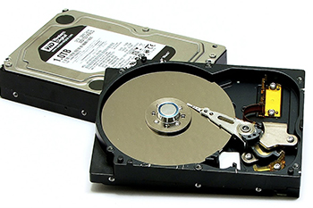

Motherboard

The motherboard is the computer's main circuit board. It's a thin plate that holds the CPU, memory, connectors for the hard drive and optical drives, expansion cards to control the video and audio, and connections to your computer's ports (such as USB ports). The motherboard connects directly or indirectly to every part of the computer.
A motherboard (sometimes alternatively known as the main circuit board, system board, baseboard, planar board or logic board, or colloquially, a mobo) is the main printed circuit board (PCB) found in general purpose microcomputers and other expandable systems.
It holds and allows communication between many of the crucial electronic components of a system, such as the central processing unit (CPU) and memory, and provides connectors for other peripherals. Unlike a backplane, a motherboard usually contains significant sub-systems such as the central processor, the chipset's input/output and memory controllers, interface connectors, and other components integrated for general purpose use and applications.
The Central processing unit (CPU), also called a processor, is located inside the computer case on the motherboard. It is sometimes called the brain of the computer, and its job is to carry out commands. Whenever you press a key, click the mouse, or start an application, you're sending instructions to the CPU
The CPU is usually a two-inch ceramic square with a silicon chip located inside. The chip is usually about the size of a thumbnail. The CPU fits into the motherboard's CPU socket, which is covered by the heat sink, an object that absorbs heat from the CPU.
A processor's speed is measured in megahertz (MHz), or millions of instructions per second; and gigahertz (GHz), or billions of instructions per second. A faster processor can execute instructions more quickly. However, the actual speed of the computer depends on the speed of many different components—not just the processor.
RAM (random access memory)
RAM is your system's short-term memory. Whenever your computer performs calculations, it temporarily stores the data in the RAM until it is
This short-term memory disappears when the computer is turned off. If you're working on a document, spreadsheet, or other type of file, you'll need to save it to avoid losing it. When you save a file, the data is written to the hard drive, which acts as long-term storage.
RAM is measured in megabytes (MB) or gigabytes (GB). The more RAM you have, the more things your computer can do at the same time. If you don't have enough RAM, you may notice that your computer is sluggish when you have several programs open. Because of this, many people add extra RAM to their computers to improve performance.
Hard drive

The hard drive is where your software, documents, and other files are stored. The hard drive is long-term storage, which means the data is still saved even if you turn the computer off or unplug it.
When you run a program or open a file, the computer copies some of the data from the hard drive onto the RAM. When you save a file, the data is copied back to the hard drive. The faster the hard drive, the faster your computer can start up and load programs.Power supply unit
The power supply unit in a computer converts the power from the wall outlet to the type of power needed by the computer. It sends power through cables to the motherboard and other components.